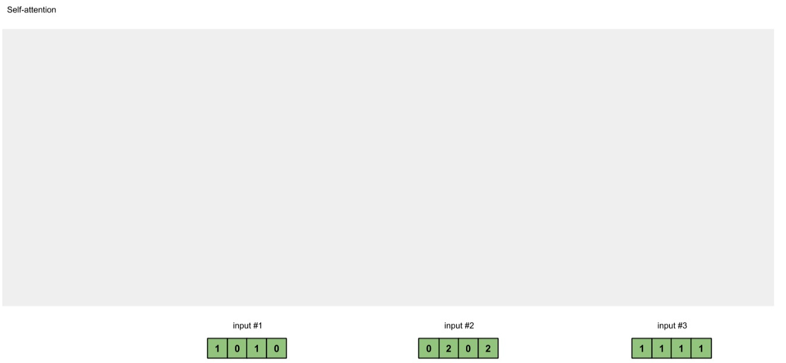
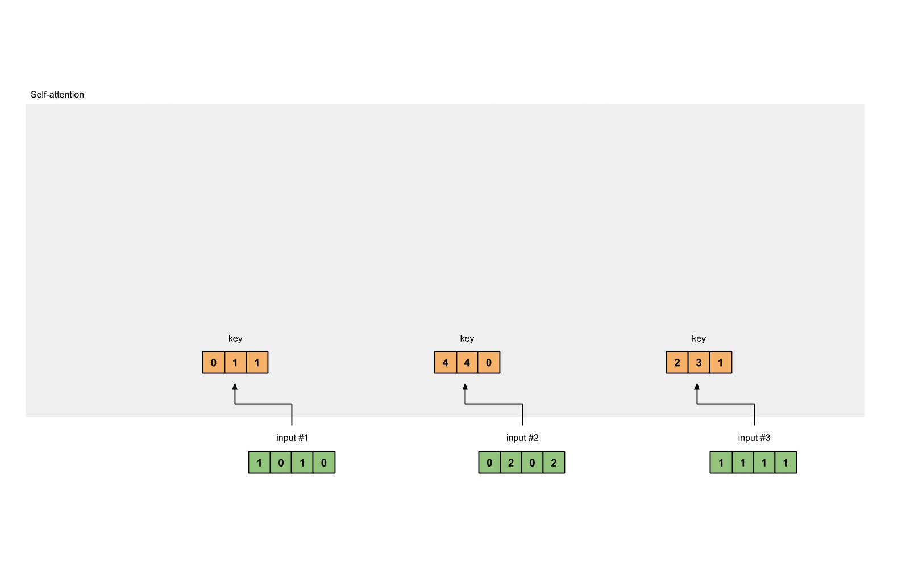
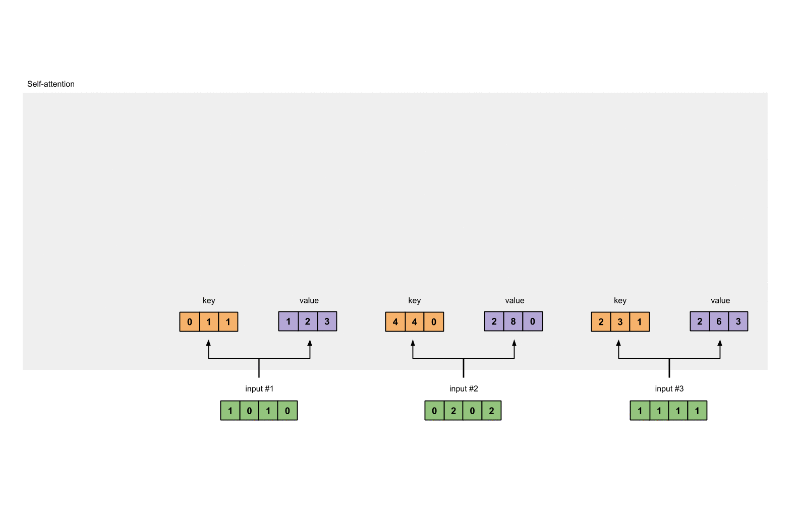
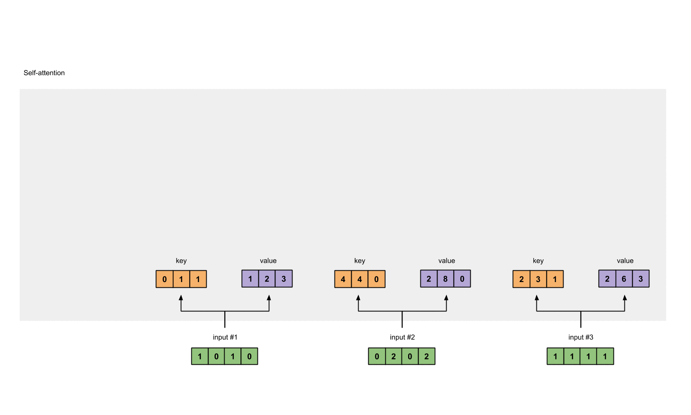
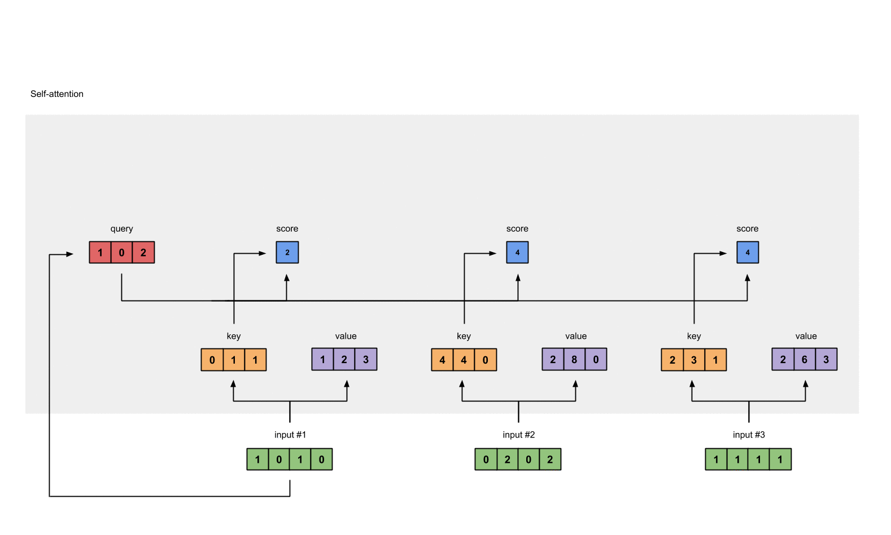
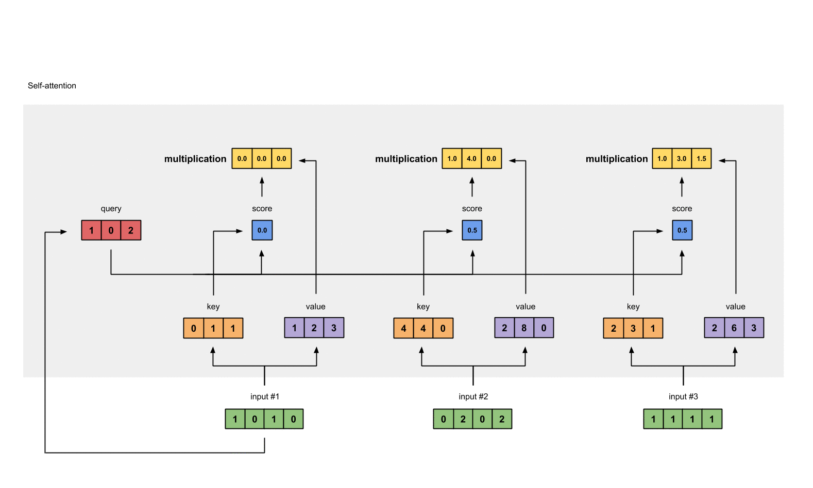

10 Self attention机制的代码实现
学习目标¶
- 可以使用pytorch实现注意力机制
- 知道注意力机制的实现流程
1 Self-attetion实现步骤¶
- 这里我们实现的注意力机制是现在比较流行的点积相乘的注意力机制
- self-attention机制的实现步骤
- 第一步: 准备输入
- 第二步: 初始化参数
- 第三步: 获取key，query和value
- 第四步: 给input1计算attention score
- 第五步: 计算softmax
- 第六步: 给value乘上score
- 第七步: 给value加权求和获取output1
- 第八步: 重复步骤4-7，获取output2，output3
1.1 准备输入¶

# 这里我们随机设置三个输入, 每个输入的维度是一个4维向量
import torch
x = [
[1, 0, 1, 0], # Input 1
[0, 2, 0, 2], # Input 2
[1, 1, 1, 1] # Input 3
]
x = torch.tensor(x, dtype=torch.float32)
1.2 初始化参数¶
# 每一个输入都有三个表示，分别为key（橙黄色）query（红色）value（紫色）。比如说，每一个表示我们希望是一个3维的向量。由于输入是4维，所以我们的参数矩阵为 4*3 维。
# 为了能够获取这些表示，每一个输入（绿色）要和key，query和value相乘，在例子中，我们使用如下的方式初始化这些参数。
w_key = [
[0, 0, 1],
[1, 1, 0],
[0, 1, 0],
[1, 1, 0]
]
w_query = [
[1, 0, 1],
[1, 0, 0],
[0, 0, 1],
[0, 1, 1]
]
w_value = [
[0, 2, 0],
[0, 3, 0],
[1, 0, 3],
[1, 1, 0]
]
w_key = torch.tensor(w_key, dtype=torch.float32)
w_query = torch.tensor(w_query, dtype=torch.float32)
w_value = torch.tensor(w_value, dtype=torch.float32)
print("w_key: \n", w_key)
print("w_query: \n", w_query)
print("w_value: \n", w_value)
- 输出效果
w_key:
tensor([[0., 0., 1.],
[1., 1., 0.],
[0., 1., 0.],
[1., 1., 0.]])
w_query:
tensor([[1., 0., 1.],
[1., 0., 0.],
[0., 0., 1.],
[0., 1., 1.]])
w_value:
tensor([[0., 2., 0.],
[0., 3., 0.],
[1., 0., 3.],
[1., 1., 0.]])
1.3 获取key，query和value¶
[0, 0, 1]
[1, 0, 1, 0] [1, 1, 0] [0, 1, 1]
[0, 2, 0, 2] x [0, 1, 0] = [4, 4, 0]
[1, 1, 1, 1] [1, 1, 0] [2, 3, 1]

- 使用向量化获取values的值
[0, 2, 0]
[1, 0, 1, 0] [0, 3, 0] [1, 2, 3]
[0, 2, 0, 2] x [1, 0, 3] = [2, 8, 0]
[1, 1, 1, 1] [1, 1, 0] [2, 6, 3]

- 使用向量化获取querys的值
[1, 0, 1]
[1, 0, 1, 0] [1, 0, 0] [1, 0, 2]
[0, 2, 0, 2] x [0, 0, 1] = [2, 2, 2]
[1, 1, 1, 1] [0, 1, 1] [2, 1, 3]
# 将query key value分别进行计算
keys = x @ w_key
querys = x @ w_query
values = x @ w_value
print("Keys: \n", keys)
print("Querys: \n", querys)
print("Values: \n", values)
- 输出效果
Keys:
tensor([[0., 1., 1.],
[4., 4., 0.],
[2., 3., 1.]])
Querys:
tensor([[1., 0., 2.],
[2., 2., 2.],
[2., 1., 3.]])
Values:
tensor([[1., 2., 3.],
[2., 8., 0.],
[2., 6., 3.]])
1.4 给input1计算attention score¶

# 为了获取input1的attention score，我们使用点乘来处理所有的key和query，包括它自己的key和value。这样我们就能够得到3个key的表示（因为我们有3个输入），我们就获得了3个attention score（蓝色）
[0, 4, 2]
[1, 0, 2] x [1, 4, 3] = [2, 4, 4]
[1, 0, 1]
# 注意: 这里我们只用input1举例.其他的输入的query和input1做相同的操作.
attn_scores = querys @ keys.T
print(attn_scores)
- 输出效果
tensor([[ 2., 4., 4.], # attention scores from Query 1
[ 4., 16., 12.], # attention scores from Query 2
[ 4., 12., 10.]])# attention scores from Query 3
1.5 计算softmax¶

给attention score应用softmax。
softmax([2, 4, 4]) = [0.0, 0.5, 0.5]
from torch.nn.functional import softmax
attn_scores_softmax = softmax(attn_scores, dim=-1)
print(attn_scores_softmax)
attn_scores_softmax = [
[0.0, 0.5, 0.5],
[0.0, 1.0, 0.0],
[0.0, 0.9, 0.1]
]
attn_scores_softmax = torch.tensor(attn_scores_softmax)
print(attn_scores_softmax)
- 输出效果
tensor([[6.3379e-02, 4.6831e-01, 4.6831e-01],
[6.0337e-06, 9.8201e-01, 1.7986e-02],
[2.9539e-04, 8.8054e-01, 1.1917e-01]])
tensor([[0.0000, 0.5000, 0.5000],
[0.0000, 1.0000, 0.0000],
[0.0000, 0.9000, 0.1000]])
1.6 给value乘上score¶
使用经过softmax后的attention score乘以它对应的value值（紫色），这样就得到了3个weighted values（黄色）。
1: 0.0 * [1, 2, 3] = [0.0, 0.0, 0.0]
2: 0.5 * [2, 8, 0] = [1.0, 4.0, 0.0]
3: 0.5 * [2, 6, 3] = [1.0, 3.0, 1.5]
weighted_values = values[:,None] * attn_scores_softmax.T[:,:,None]
print(weighted_values)
- 输出效果:
tensor([[[0.0000, 0.0000, 0.0000],
[0.0000, 0.0000, 0.0000],
[0.0000, 0.0000, 0.0000]],
[[1.0000, 4.0000, 0.0000],
[2.0000, 8.0000, 0.0000],
[1.8000, 7.2000, 0.0000]],
[[1.0000, 3.0000, 1.5000],
[0.0000, 0.0000, 0.0000],
[0.2000, 0.6000, 0.3000]]])
1.7 给value加权求和获取output1¶

把所有的weighted values（黄色）进行element-wise的相加。
[0.0, 0.0, 0.0]
+ [1.0, 4.0, 0.0]
+ [1.0, 3.0, 1.5]
------------------------
= [2.0, 7.0, 1.5] 得到结果向量[2.0, 7.0, 1.5]（深绿色）就是ouput1的和其他key交互的query representation
1.8 重复步骤4-7，获取output2，output3¶
outputs = weighted_values.sum(dim=0)
print(outputs)
- 输出效果
tensor([[2.0000, 7.0000, 1.5000],
[2.0000, 8.0000, 0.0000],
[2.0000, 7.8000, 0.3000]])